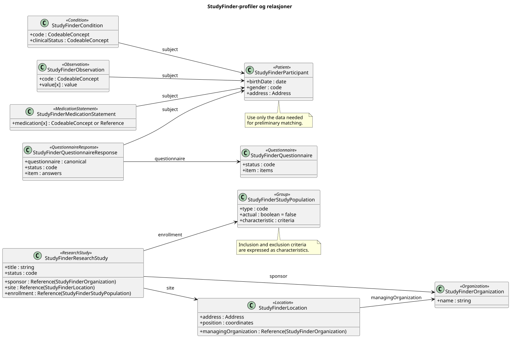

Forskningsstudier for deltakere
0.1.0 - ci-build

Forskningsstudier for deltakere
0.1.0 - ci-build

Forskningsstudier for deltakere - Local Development build (v0.1.0) built by the FHIR (HL7® FHIR® Standard) Build Tools. See the Directory of published versions
| Official URL: http://hl7.no/fhir/ig/studyfinder/ImplementationGuide/hl7.fhir.no.studyfinder | Version: 0.1.0 | |||
| Draft as of 2026-11-09 | Computable Name: StudyFinder | |||
Denne implementasjonsguiden beskriver hvordan informasjon om forskningsstudier og potensielle deltakere kan representeres med HL7 FHIR R4. Målet er å gjøre det enklere for en person å finne studier som kan passe ut fra opplysninger som alder, bosted, helsetilstand og legemiddelbruk.
Guiden er rettet mot systemer som publiserer eller formidler studier, og tjenester som lar personer utforske aktuelle studier. Den standardiserer utveksling av data; den definerer ikke en bestemt portal eller en komplett rekrutteringsprosess.
Første versjon av guiden beskriver:
Guiden avgjør ikke om en person er endelig kvalifisert til å delta. Det er studieansvarlig som vurderer dette. Informasjon om kompensasjon er ikke et obligatorisk FHIR R4-felt i denne modellen og må avtales og beskrives særskilt før den standardiseres.
| Ressurs | Bruk i denne guiden |
|---|---|
ResearchStudy |
Beskriver studiens tittel, status, formål, sponsor, periode og tilknyttede steder. |
Organization |
Beskriver en organisasjon som er studiested, sponsor eller ansvarlig aktør. |
Location |
Kan beskrive et konkret fysisk studiested med adresse og geografisk informasjon. |
Group |
Beskriver målgruppen for studien. I FHIR R4 kan strukturerte kriterier uttrykkes med gruppens characteristic-elementer, blant annet alder og helsetilstand. |
Patient |
Kan representere personen når det er nødvendig å utveksle personopplysninger i FHIR. En søketjeneste bør ikke opprette eller lagre en varig pasientressurs uten et reelt behov og gyldig grunnlag. |
Condition, Observation og MedicationStatement |
Kan uttrykke henholdsvis helsetilstander, relevante målinger og legemiddelbruk når disse opplysningene trengs for vurderingen. |
Questionnaire og QuestionnaireResponse |
Kan brukes til å innhente opplysninger fra personen på en strukturert måte. |
I FHIR R4 peker ResearchStudy.site på en Location. Et fysisk sted kan knyttes til organisasjonen via Location.managingOrganization. ResearchStudy.location er en kodebar beskrivelse, ikke en referanse til en Location-ressurs.
Figuren viser StudyFinder-profilene som er definert i guiden, hvilken FHIR-ressurs hver profil bygger på, og relasjonene mellom dem.

En søketjeneste kan sammenligne strukturerte studiekriterier med opplysninger personen selv har gitt. Resultatet bør vise hvilke kriterier som ser ut til å være oppfylt, ikke oppfylt eller uavklart fordi det mangler informasjon. Uavklart skal ikke tolkes som kvalifisert.
En samlet prosentvis «match» er ikke definert av FHIR og må ikke presenteres som sannsynligheten for at studieansvarlig godkjenner deltakelse. Tjenesten bør vise at vurderingen er foreløpig og la personen se hvilke opplysninger og kriterier den bygger på.
En studieansvarlig registrerer en rekrutterende studie med beskrivelse, målgruppe, strukturerte kriterier, sponsor og ett eller flere studiesteder.
En person oppgir nødvendige opplysninger, for eksempel alder, bosted, helsetilstander og legemiddelbruk. Tjenesten viser studier med en forståelig vurdering av hvert kriterium. Avstand beregnes av tjenesten ut fra personens valgte geografiske område og studiestedets adresse eller koordinater; avstandsberegning er ikke definert av FHIR.
En studie kan angi at den søker friske frivillige. Tjenesten må skille dette fra manglende helseopplysninger: fravær av registrerte tilstander er ikke i seg selv dokumentasjon på at personen er frisk.
Helseopplysninger er sensitive personopplysninger. Tjenester som bruker denne guiden bør begrense innsamling og lagring til det som er nødvendig, forklare formålet tydelig og ikke sende personens opplysninger til studier eller studieansvarlige uten et eget grunnlag og nødvendig informasjon til personen.